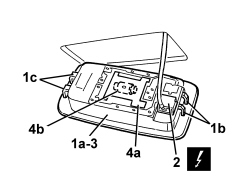

7040E15 SIDE COURTESY LIGHT (ONE) - R.R. ON VERSIONS WITH SUN ROOF
- Path
- Procedures > 70 FITTINGS > 7040 BODY INTERIOR FITTINGS AND TRIM > 7040E INTERIOR COURTESY LIGHT SYSTEM > 7040E15 SIDE COURTESY LIGHT (ONE) - R.R. ON VERSIONS WITH SUN ROOF
- Kind
- repair procedure (removal / refitting; the operation number is the code)
- Applies to
- all engines; all production periods
- Interactive page
- https://sloeber94.github.io/elrnDB/#/939004838
Applies to: all engines; all production periods
 Removing
Removing
 Refitting
Refitting1. Release the courtesy light (1a) releasing the retainers (1b) and (1c).
2. Disconnect the electrical connection.
Description | Component |
|---|---|
LEFT REAR COURTESY LIGHT | |
RIGHT REAR COURTESY LIGHT |
3. Keep the courtesy light.
4. If necessary, lift up the flap (4a) and remove the bulb (4b), releasing it from the side retainers.

Applies to: all engines; all production periods
Refitting
Removing- Check that the courtesy light and the bulb are not damaged.
- If removed, fit the bulb in place attaching it to the side retainers, then close the flap.
- Connect the electrical connection.
- Fit the courtesy light and attach the retainers.
- Check that the courtesy light is working.
Topics linked from this page (2)
Topics that link to this page (8)
- 7030B12 SLIDING ROOF (ASSEMBLY) - R+R
- 7030B40 DRAINAGE CHANNEL - R R
- 7030B50 SUN ROOF SLIDING GUIDE (ONE), LH OR RH - R.R
- 7040H16 ROOF PANEL LINING FOR VERSIONS WITH SUN ROOF - R.R
- E2510 COURTESY LIGHTS - WIRING DIAGRAM
- E2510 COURTESY LIGHTS - COMPONENT LOCATION
- E2510 COURTESY LIGHTS - WIRING DIAGRAM
- E2510 COURTESY LIGHTS - COMPONENT LOCATION